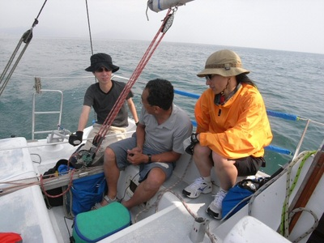
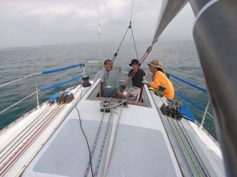
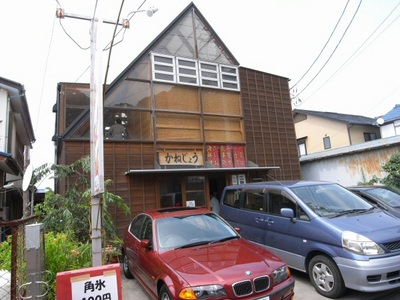

ヨットで駿河湾横断 | 2008年7月 幹事：サムちゃん |
|---|---|
| 先週の日曜日、ヨット教室に参加してくれたアウトドア仲間。このなかのメンバーに２０日の夜、突然電話で呼び掛けて、セーリングに誘った。 実は自分の予定が立っていないので、前もって計画を立てて募集できず、 また、梅雨明け直後の安定した海、風がいつになるのか判らず、前日に声を掛けて集まってくれたのはＫくんとIさんの二人。 梅雨明け直後の安定した海の状況ならば、僕が一人でも３ｏｒ４人は西伊豆へ連れていけるだろう…と前日の海を観て思った。天気図を観ても思った。 で、急遽連絡をして、２１日の朝８時ヨットハーバー集合。 彼らは昨年、３回サムシングに乗っている。なおかつ先週のヨット教室にも参加した。 早速、クルージングの準備。キャビン内を片づけて、ヒールしても落ちないシートを取り付けたり、たまにしか云うことを聞かないオートヘルムスを出したり、フェンダーを片づけたりして準備。 ８時３０分、ドッグアウト。 航路を外れて、メインセールアップ。南の風。 艇を風に立ててタマタマにボルトロープを送り込むのはＫくんの役目。 メインハリヤードを後ろでウインチを介して引き込むのはＩさん。 岬（三保真崎海岸）を越えて、外防波堤を越えて清水港を出て、駿河湾へ。 行き先は宇久須、コース１４０度。ちょっとオーバーかな。片道約１７マイル。 ヘルムはＫくんに頼む。 先日のヨット教室のおかげで、舵、ティラーを切る意味がなんとなく分かったようだ。 今日はガスティーだ。西伊豆が見えない。 Ｎｏ．１ゼノアをアップ。オンコース、スターボードタックのアビーム。 コンパスを見ながらコースを追う。 快適に帆走り始めたが、風の腰が弱い。まあ、この時期、やむを得ないが。 １０時：駿河湾の真ん中あたりで風が落ち、ゼノアを降ろし機帆走。 潮目がいくつもあって、ゴミ溜まりがすごい。何回も避けながらオンコース。 冷却水取り入れ口に詰まると、潜らなくてはならない（泣）。 | |
|  ウインチにカメラを取り付けて１９ミリで撮影。 ＵＳＢレリーズ延長ケーブル付き |  ブームバングに取付。 延びているコードがレリーズケーブル |
| まだガスが晴れない。西伊豆の山が確認できないのだ。 良い風が吹いてくれば、ガスが晴れるのだが。 宇久須の一時間ほど手前で、やっと黄金崎を確認。 宇久須の赤灯台を右に曲がって東海工業の岸壁へ。誰も居ない。休日だろうな。 知人の「カネジョウ」さんの社長に電話して、この岸壁使用の可否を問う。 ついでに食事の予約も（笑）。 自分達の手で西伊豆へ初上陸したＫくんとＩさん。 肉丼、海鮮丼、刺身定食…ついでに生ビールもイッパイ（笑）。 食事をしている間に、重須の艇＜ＳＯＰＨＩＡ（ヤマハ３０？）＞が、サムシングの前にモヤイを取っていた。出かける前に、ドリプラの件でちょっとお喋り。 南の風、順風、イイ風が吹いてきたぞ。さあ、戻ろう！。１４：００ 港の中でメインセールアップ。 港を出て、ラッシングしておいたＮＯ．１ゼノアもアップ。 Ｉさんにジブハリヤードをガンガン引いて貰う。ウインチ係はボク（笑）。 コースは１８０を足して３２０度。 ガーミンを電源オンしてナビモードに。ルートをトラックする。 南の風５〜６ｍを左舷から受けてポートタックの右舷開き。 風を艇の横から受けてのアビーム。海は波は無しフラット。 艇速：６〜７ノットをキープ。気持ちいいね。 | |
 |  |
| 帰路も最初はＫくんがヘルム、途中からＩさんに交代。 「はいティラーを引いて、コースを落として、あっ戻して」 「あ、落としすぎ…、ハイ戻して…」とヨット教室状態。 でも、ヨットが判ってきたかな。 聞こえるのは艇が波を切る音のみ。 それを支える夏の風の音。今年も夏になったんだね。 広角ワイド１９ミリの威力はすごい。 フォアステイの前に立ち、バウのパルピットに寄りかかり、後ろを撮す。 フォアステイ、ジブセールが写る。 「そなえよ常に」（バーデンパウエル） これはボーイスカウトに入っていた少年時代（笑）、に覚えた言葉なんだけど、ヨットとか野外活動など自然に遊ばせて貰う活動では必須。 ヨットの上でも、常に何か有ったら（有ったら困るけど）、その時の対応をすぐに出来るよう、常に２つあるいは３つ先のコトを準備しておかなくてはならない。 山も海も感覚的には同じだと思うよ。なんとなく通じるモノがあると感じる。 ボクの廻りではヒマラヤへ行きながらヨット乗ってる人もいるし（笑）。 | |
 |  |
| 最近、アウトドア雑誌にカヌーとかシーカヤックが掲載されて、やっている人が結構多いよね。 西伊豆なんかシーカヤックのメッカだ。 シーカヤックに追っ手用のセールを着けてセーリングしているを見たことあるよ。 そんなのもアウトドア雑誌で見たことがある。 あれってヨットじゃん。 いろいろなコトを話しながら、約３時間のセーリング。 清水港に戻ってセールをダウンし機走。 さあ、ポンツーンへ戻ろう。 フェンダーはココとココ。 ポンツーンに着いたら、モヤイロープはここから取る。 などなど、モヤイを取るまで気が抜けない。 アスターンでドッグイン。 ５本の黒いモヤイロープを順次取り、クリートに掛ける。 エンジンオフ。 お腹が減ったね（笑）。 | |
| 写真＆コメント ｂｙ サムちゃん | |